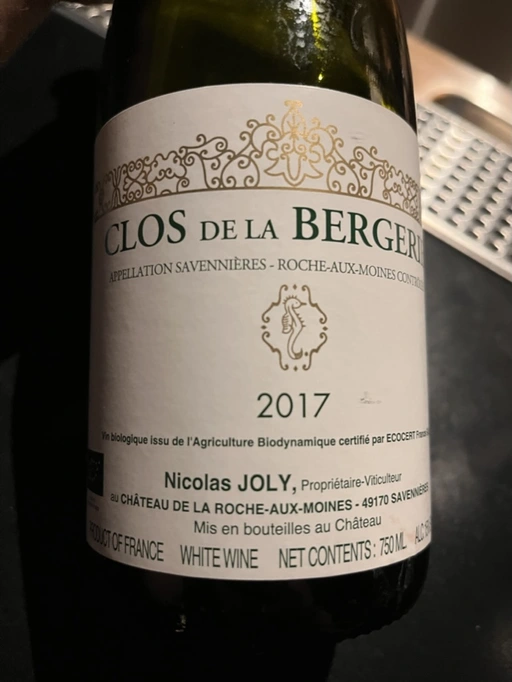
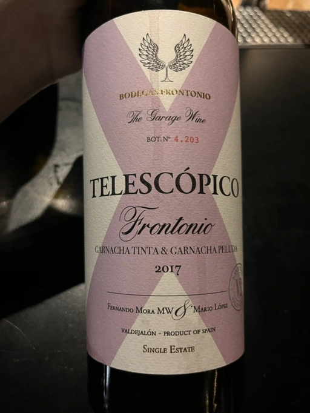
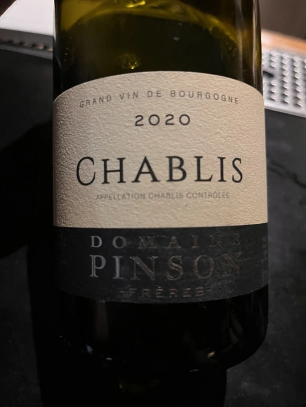
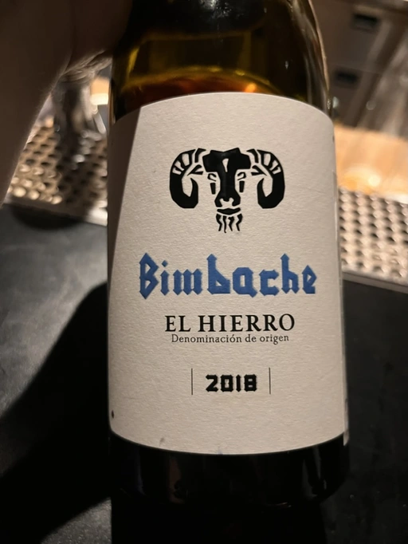
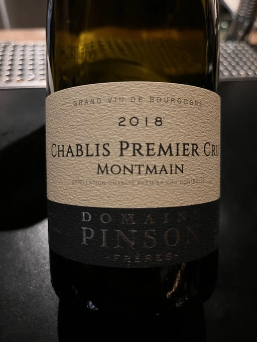
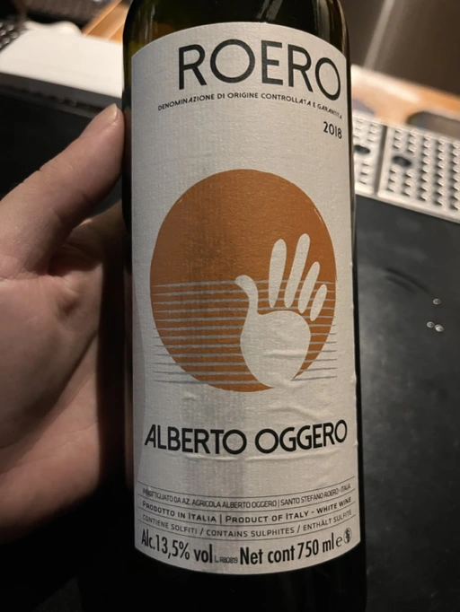
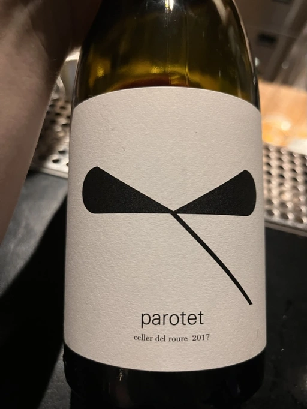
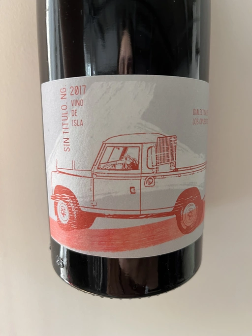

- Type
- White Still, Dry
- Producer
- Coulee de Serrant
- Vintage
- 2017
- Location
- France, Savennières-Roche-aux-Moines AOC
- Grapes
- Chenin Blanc
- Alcohol
- 15
- Sugar
- NA
- Price
- 2334 UAH
- Cellar
- N/A
Ratings
2022-08-08 - 7.80
That’s the problem with loud names - expectations are high. And when they are not met, the disappointment is immeasurable and the day is ruined. Look, the bouquet is intriguing, and sophisticated. Salted apples, iodine, shells, and green herbs. Ok, not typical Chenin Blanc, but who am I to judge? Then I taste it only to be hit by lack of balance. Ethanol is out of place, sweetness is too high. There are only two good things about the taste - acidity and finish. Is it enough? No. Maybe I need another try!
Related

Frontonio
Telescópico Garnacha - 2017

Domaine Pinson
Chablis - 2020

Bimbache Vinicola
Tinto El Hierro - 2018

Domaine Pinson
Chablis Premier Cru Montmain - 2018

Alberto Oggero
Roero Arneis - 2018

Celler del Roure
Parotet - 2017

Victoria E. Torres Pecis
Sin Titulo NG - 2017